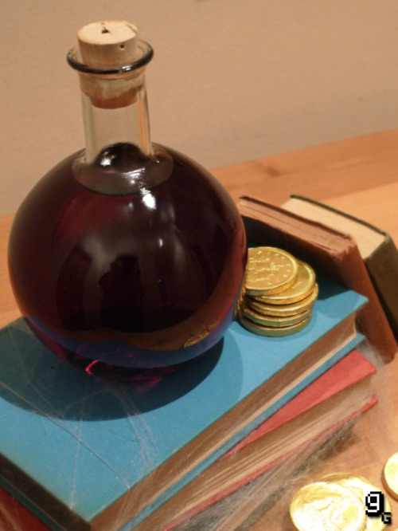

Poção de Cura

Poção de Cura do jogo Diablo,esta bebida não deve ser consumida por menores de 18 anos.
Ingredientes:
- Uma medida de gin de cranberry
- Metade de uma medida de vodka Zubrowka (se você não tiver, use uma parecida)
- Metade de uma medida de licor Amaretto
- Suco de limão
- Água tônica
Modo de preparo
- Misture tudo em um recipiente!!!
Voltar